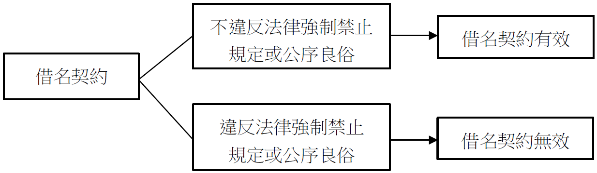

借名契約
借名登記源自於借名契約。因此，借名契約之效力關係借名登記之效力。換言之，若借名契約無效，借名登記失其依附，則借名登記失其效力。據此，辦理塗銷借名登記及其附隨登記（如地上權登記、抵押權登記等）。
• (一) 借名契約之意義 借名契約乃當事人一方將自己之財產以他方名義登記，而仍由自己管理、使用、處分，他方允就該財產為出名登記之契約（最高法院98年度台上字第76號判決）。
• (二) 借名契約之法律性質 借名契約類推適用民法委任之規定。所稱委任者，謂當事人之約定，一方委託他人處理事務，他方允為處理之契約（民§528）。
• (三) 借名契約之法律效力
-
借名契約僅規範借名人與出名人之內部關係。出名人對外所為之處分，仍屬有權處分，無民法第118條無權處分之適用。換言之，出名人所為之處分有效。
-
借名契約之內容如不違反法律強制禁止規定或公序良俗者，則借名契約有效。 例如：Ａ公司因農業發展條例第33條規定而無法將耕地登記於其名下，乃與自然人Ｂ成立借名契約，並將該耕地登記於Ｂ名下。現行實務，此借名契約有效。
-
借名契約之內容如違反法律強制禁止規定或公序良俗者，則借名契約無效。 例如：非原住民甲欲購買乙所有之原住民保留地經營民宿，為規避山坡地保育利用條例第37條第2項規定（即原住民取得原住民保留地所有權，如有移轉，以原住民為限）及原住民保留地開發管理辦法第18條第1項規定（即原住民取得原住民保留地所有權後，除政府指定之特定用途外，其移轉之承受人以原住民為限），乃與原住民丙成立借名契約，並將乙之土地所有權移轉登記於丙名下，無異實現非原住民取得原住民保留地之效果，則借名契約無效（108年度台上大字第1636號裁定）。
[圖片1]
【附註】 民：民法
這篇文章考過哪些題目
讀完試著自己作答，再點進去對答案。依文字相似度自動比對，不一定完全對應。
- 105 高考《民法（包括總則、物權、親屬與繼承）》第 1 題
甲為不動產投資客，為避免每年須繳交高額之地價稅及房屋稅，遂與兒子乙約定將其購買之Ａ屋登記於乙名下，然Ａ屋之稅金及水電費用… - 101 高考《民法（包括總則、物權、親屬與繼承）》第 1 題
甲經營畫廊，其父乙為知名畫家。乙之畫作在甲之畫廊展出期間，甲以自己名義將乙之畫作賣給知情之丙，並經丙之同意將該畫作置於甲… - 111 高考《土地經濟學》第 3 題
臺灣過去曾經限制農地只能在自耕農之間交易，現在也規定原住民保留地只能在原住民之間交易。這種限制土地市場交易人資格的規定，…
文章圖片

注：本文圖片存放於 ./images/ 目錄下